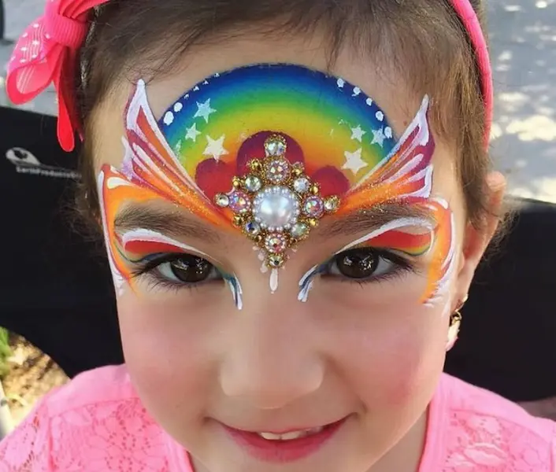

🌍 Oslavme planetu barvami
Den Země je svátkem přírody, ale co kdyby se z něj stal i svátek barev? Představte si samotnou planetu Zemi jako veselého tvora – s modrými oceány jako očima, zelenými kontinenty jako líčky, a oblaky jako nadýchanými obočím. A teď si představte, že každý dětský obličej na vaší akci může být její kouskem – kouskem přírody, krásy i hravosti.

Děti se mohou nechat proměnit v tygra z Asie, papouška z Amazonie, lišku z českého lesa nebo i v samotnou Matku Zemi – s řekami tekoucími přes tváře, horami na čele a květy ve vlasech. Každý obličej se tak stává nejen uměleckým dílem, ale i připomínkou, že tahle planeta není jen kulatá koule – je to domov, který stojí za to chránit.
🎨 Malování na obličej: Umění, které vydrží až do večeře
Facepainting není jen „zábava pro děti“. Je to způsob, jak vytvořit atmosféru, upoutat pozornost a nechat každého návštěvníka akce zažít něco osobního. V dětském koutku s barvami vzniká kouzelný svět – plný motýlů, víl, superhrdinů a žiraf.
Když děti nosí přírodu na tváři, spojení s tématem Dne Země je silnější než jakýkoliv leták. A když pak běhají po parku s obličejem pandy, zároveň podvědomě vnímají: „tohle zvíře si zaslouží chránit“.
🏫 Školní a komunitní akce: Barevná tečka za každým programem
Ať už pořádáte školní jarmark, den otevřených dveří, obecní slavnost nebo komunitní piknik, facepainting se vždy postará o úsměvy. Z nudného čekání u stánku se stává radostné očekávání proměny – a z fronty dětí se stává galerie živých obrazů.
Rodiče si oddechnou, děti se zabaví a organizátoři mají jistotu, že jejich akce bude nejen edukativní, ale i zábavná. Facepainter tak není „doplněk“, ale klíčový hráč ve vaší programové sestavě.
🌈 Ksychtíkovo.cz – když se to dělá srdcem
Ksychtíkovo.cz je tým profesionálních facepainterů, kteří rozumí nejen štětcům, ale i dětské psychologii. S trpělivostí malují na desítky tváří, z každé dělají originál a přitom zachovávají přirozený úsměv (dětský i svůj).
Používají barvy, které jsou bezpečné, hypoalergenní a ekologicky šetrné – protože i štětec může být zelený. A výsledek? Děti, které nechtějí domů, protože ještě nebyly proměněny v želvu.
„Ksychtíkovo.cz zachránilo náš Den Země. Děti byly nadšené, rodiče spokojení a my jsme konečně měli čas na kávu.“
Pokud hledáte inspiraci pro originální malby s přírodní nebo ekologickou tématikou, podívejte se na krásné nápady na stránce
Face Paint Arbor & Earth Day Event na Pinterestu. Najdete tam spoustu motivů, které promění Den Země v barevné dobrodružství.
📅 Jak objednat?
Objednání je jednoduché jako motýl na tvář. Navštivte https://ksychtikovo.cz, vyberte si z nabídky služeb a domluvte si termín. Ksychtíkovo tým vám pomůže navrhnout vhodný program a motivy podle typu akce – ať už jde o ekologickou slavnost, školní den nebo festival.
💡 Závěrem: Když barvy mluví za planetu
Někdy jeden namalovaný motýl na tváři dítěte vydá za tisíc slov o ochraně přírody. Facepainting je hravý, vizuální a silně emoční způsob, jak si připomenout, že Země není jen místo, kde bydlíme – je to inspirace.
A jestli má Den Země nějaký obličej, tak je určitě barevný, usměvavý… a má třpytky!